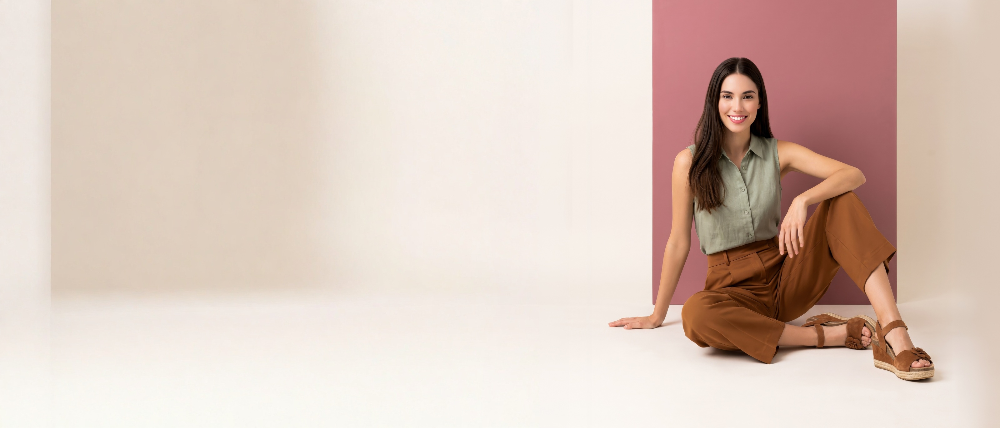

<!doctype html><meta name="viewport" content="width=device-width,initial-scale=1"><title>Portrait</title><style>body{margin:0;background:#111}portrait-follow{display:block;position:relative;line-height:0;touch-action:pan-y;max-width:1600px;margin:0 auto}portrait-follow img{width:100%;display:block}portrait-follow canvas{position:absolute;inset:0;width:100%;height:100%;pointer-events:none}</style><portrait-follow data-manifest="./manifest.json"><canvas hidden></canvas></portrait-follow><script src="player.js"></script>